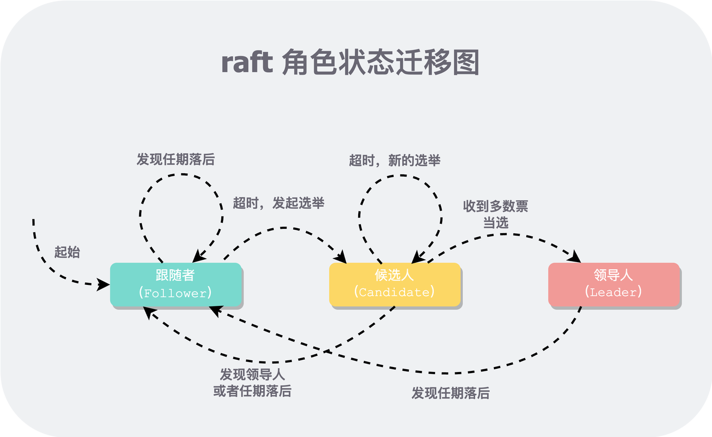

02. Raft 代码总览
概述
通过 git 从这个 repo 拉下代码（如果你没有权限，请找作者加），切换到 main 分支，就可以在 src/raft/raft.go 中补充你的实现了。
1 | git clone https://github.com/storage-courses/raft-course.git |
raft.go 中已经有一些框架代码和英文注释。所有测试代码在 src/raft/test_test.go 中，一共有 PartA~D 四个 Part，每个 Part 做完后测试通过之后再去做下一个 Part。Raft 部分所有样例实现在 raft 分支中，如果有遇到调试不过去的地方，可以切换过去参考。
举个例子，如果想切换到 PartA 的第二部分实现：心跳逻辑[06.Raft PartA 心跳逻辑]，可以通过 git log 看对应 commit id，然后 checkout 过去即可。
1 | ➜ raft git:(raft) git log |
最后，每一部分写完后，测试可以保证逻辑大体正确；加上 -race 选项 可以确保没有数据竞态。本实验出现数据竞态的主要原因，就是多个 goroutine 并发访问一个共享变量时，有的 goroutine 没有加锁。
接口
你在实现 Raft 时，主要需要对外提供以下接口，即所有测试依赖这些接口语义的正确实现。
1 | // 创建一个新的 Raft 实例 |
服务通过调用 Make(peers, me, persister, applyCh) 创建一个 Raft Peer。其中 peers 是所有参与 Raft Group 的对端句柄数组，通过这些句柄，可以给所有 Peer 发送 RPC。me 是本 Raft Peer 在数组中的下标，测试会保证所有 Raft Peer 看到的数组中元素顺序是一致的。
Start(command) 是应用要求 Raft Group 提交一条日志，该函数是异步的，要立即返回，而无需等待日志提交后再返回。通过论文我们知道，只有 Leader 才能提交日志，因此如果不是 Leader 的 Peer 收到此调用后，立即返回说自己不是 Leader 即可。如果是 Leader 且最终提交成功，会通过 Make 时传入的 applyCh 将消息返回给应用层。
GetState() 是应用层用于确定当前 Raft Peer 的任期和状态。
RPC
labrpc 是用于模拟复杂网络环境（延迟、乱序、丢包）的一个小 RPC 库，工业中性能肯定不够用。但在本课程中，为了方便在单机模拟复杂的分布式环境，这个库非常重要。
RPC 是使用了 Client-Server 模式，Client 端构造参数，发送 RPC 请求；Server 端接受请求，进行处理，构造返回值。labrpc 帮我们实现了大部分逻辑，对于一个 RPC 请求，我们只需要实现：
- 定义请求参数和返回值结构体
- 实现 Client 侧的发送逻辑
- 实现 Server 侧的回调函数
下面以领导者选举的 RPC 为例，说明下如何使用这个框架。
1 | type RequestVoteArgs struct { |
可以看出，每个 RPC 基本包括四部分：
- 请求参数：
RequestVoteArgs - 请求回复：
RequestVoteReply - 回调函数：
RequestVote - 发送请求：
sendRequestVote
需要注意：
- 请求
RequestVoteArgs和回复RequestVoteReply中所有字段必须大写，否则没法导出（参见 golang 的命名规则），为labrpc所解析。 - RPC 接收方（Server 端），收到 RPC 后，labrpc 库会自动调用回调函数
RequestVote - RPC 发送方（Client 端），通过调用指定下标的 Peer 在 Make 中传入的句柄参数，以名字的方式
Raft.RequestVote（即这里的名字和回调函数的函数名一定要一致，并且要加上 Raft 前缀）来具体定位到 Server 端的对应回调函数。至于如何根据句柄找到对端 Raft Peer、如何将请求打过去、如何序列化和反序列化请求、如何在 Server 端调用回调函数，都是 labrpc 框架做的事情，我们无需关心。
下面说一下我们如何来组织 Raft 代码，可以从两个角度来鸟瞰式地纵览 Raft：
- 三个工作流
- 一个状态机
工作流
所谓工作流，就是一个处理逻辑闭环，可以粗浅理解为一个循环（ loop），因此要分别独占一个线程。循环中通常要做一些事情，通常由两种方式触发：
- 时钟触发（time-driven）：周期性地做某件事，比如 Leader -> Follower 的发送日志。
- 事件触发（event-driven）：条件满足时做某件事，比如当
commitIndex>applyIndex时，需要 apply 已经提交的日志。
实现思路
每个工作流使用一个线程来实现，线程的最外层逻辑就是一个循环。循环当然总有个退出条件，对于 raft 来说，就是是否已经被 killed。
对于时钟触发（time-driven）的工作流，在 golang 中，我们至少有两种方式可以控制触发：
time.Sleeptime.Ticker和time.Timer
方法 2 会涉及 golang Channels 和回调函数，使用起来相对复杂，不建议新手用。因此，我们选用方法 1，实现起来就很自然，比如发送一轮日志后，就调用 time.Sleep 沉睡一个心跳周期。
对于事件触发（event-driven）的工作流，在 golang 中，我们也至少有两种方式可以控制：
sync.CondChannel
这里我们选用 sync.Cond ，因为可以配合锁使用，以保护一些使用共享变量的临界区。而 Channel 只能做简单的唤醒，并不能和锁配合使用。
一个 Raft 实例（Raft Peer）的主要有三个工作流：
- 领导选举（leader election）
- 日志同步（ log replication）
- 日志应用（log application）
其中前两个是时钟触发，最后一个是事件触发。下面将逐个结合代码来说明。
领导选举
遵循 lab 中给出的命名方式，我们将所有的工作流称为 xxxTicker （滴答滴答，时钟触发），我个人习惯也常称为 xxxLoop。主要逻辑，就是一个大的 for 循环，隔一段时间 time.Sleep(time.Duration(ms) * time.Millisecond)就进行一次检查，看选举时钟否超时。如果超时，会转变为 Candidate，并发起选举。
我们这里并没有真的使用一个时钟（比如 time.Timer），原因如前所述。而是每次时钟重置时，就重置计时起点：rf.electionStart 为当前时刻 time.Now() 。这样，每次循环检查时，如果检查时间点与计时起点的差值大于选举超时间隔，则进入选举流程rf.startElection()。
1 | func (rf *Raft) electionTicker() { |
选举的过程，粗略来说，就是逐一向所有其他 Peer 发送“要票”（RequestVote） RPC，然后看是否能获得多数票以决定是否当选。当然，还有很多细节没有讲，此处不再展开，后面会有专门一节[05.Raft PartA 选举逻辑]来讲。这里与代码组织相关，值得一提的是如何处理 RPC。
现实中 raft 的要票请求 RPC 通常会走网络（虽然本实验是在单机模拟的），而网络通信有诸多不可靠之处：
- 请求可能在途中丢失
- 请求可能无限阻塞
- 对端机器可能宕机
- 对端机器可能很慢
- …
总之，RPC 耗时很不确定，因此不能同步地放到 electionTicker 中，每个 RPC 需要额外启动一个 goroutine 来执行。
日志同步
日志同步的工作流和领导选举很像，但又有所不同：
- 生命周期不同。领导选举的工作流会持续整个 raft 实例的存活周期；而日志同步地工作流只会持续它当选为领导的那个任期（ term）。之后如果再当选，会重新启动一个工作流。
- 超时间隔不同。领导选举的超时间隔是在一个小范围内随机的；而日志同步地超时间隔是固定的。
1 | // Tick only span for one term. |
日志应用
只要理解了 sync.Cond 的使用（我们在多线程编程[附录 1]那一节讲过），日志应用的工作流是比较简单的：当条件满足时，遍历相关日志，逐个 apply。由于 apply 需要将 msg 逐个送到 channel 中，而 channel 耗时是不确定的，因此需要放到临界区外。
1 | func (rf *Raft) applicationTicker() { |
状态机
每个 Peer 都会在三个角色：Follower，Candidate 和 Leader 间变换，当条件满足时，就会从一个角色变为另一个角色。

状态机没问题，候选人在发现同任期领导人后会转换成 Follower，录屏中口误。
可以根据这三个状态抽象出三个函数：becomeFollower，becomeCandidate，becomeLeader，即驱动状态机的“线”。并且增加一些限制，禁止一些图中不存在的“线”。
1 | func (rf *Raft) becomeFollowerLocked(term int) { |
其中 Locked 的后缀，说明该函数必须在锁的保护下调用，因为函数内部并没有加锁。另外，还可以加一些适当的日志，表明角色的转换过程，在进行调试时，角色转换时最重要的信息之一。
具体实现
如果一次性实现 Raft 将会非常复杂，且很难一次性写对，因此我们将其分成四个部分来增量式的实现。Raft 最主要的逻辑就是领导者选举和日志同步，因此可以分别作为一个部分；之后，为了应对宕机重启，需要再实现 Raft 状态持久化和恢复逻辑；最后，随着写入的不断增多，日志会越来越大，照论文中的方案，我们会对之前的状态定时 snapshot，就可以将 snapshot 对应的老旧日志截断，只保留 snapshot 之后最新的日志。
简单来说，四个部分的分工大概是：
- Part A：领导者选举：但不带日志比较
- Part B：日志同步：同时完善领导选举，比较日志
- Part C：状态持久化：将所有影响逻辑的状态外存
- Part D：日志压缩：做 snapshot
每个部分通过测试后再进行下一部分，这种思想也是构建大型工程常用的：先跑通一个最小可用模型，然后通过测试保证正确后，再不断增量式迭代增加功能，每次都通过测试来保证增量部分的正确性。
参考
- Raft Structure Advice：https://pdos.csail.mit.edu/6.824/labs/raft-structure.txt
 微信
微信